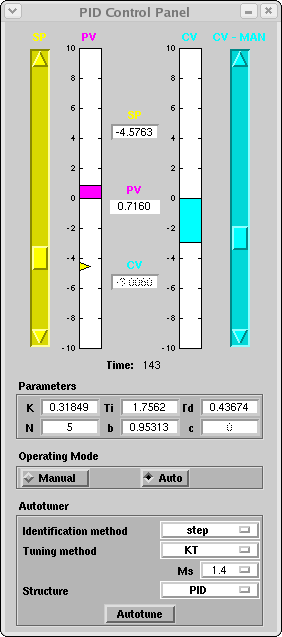
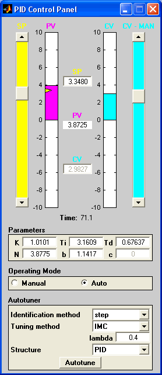

| AutotunerPID Toolkit | |
PID Control Panel
The PID Control Panel is designed to closer resemble the layout of a typical real industrial autotuner (at least in the control options).
| Linux | Windows |
|  |  |
In the following we will briefly summarize the characteristics of this interface, which is mainly split in four areas.
| Note The GUIs control the value of the set-point, load disturbance and measurement noise through a reference to the name of the corresponding blocks. It is suggested that you DON'T change the name of this block. If you do this, you must also change the reference in the masks of the block "PID Control Panel" and "Environment Panel" |
Process Controls
The upper part of the GUI is used to interact with the control system:
Parameters
It shows the current values of the six ISA-PID parameters (K, Ti, Td, N, b, c). All the parameters are editable except the weight of the derivative action that is constant (c=0). The changes affect the system immediately.
Operating Mode
It allows to controls the running mode of the PID regulator system. In Auto mode, the value of the control variable is computed by the PID regulator, and the CV-MAN slider and the CV edit area are both disabled. In Manual mode the CV is defined manually by the user with either the CV-MAN slider or the CV edit area.
Autotuning can be performed either in Manual or in Auto mode. In the first case, however, the PID regulator does not commute automatically to Auto mode after the completion of the autotuning process.
Autotuner
It manages the autotuning process, through the following settings:
| | Setting up the Simulation | Environment Panel | |